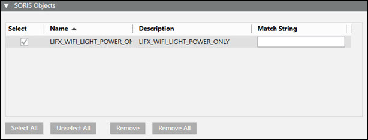
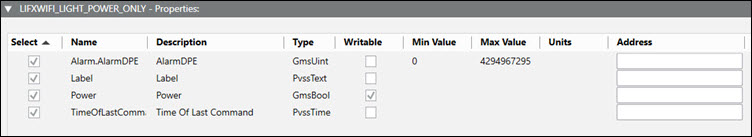
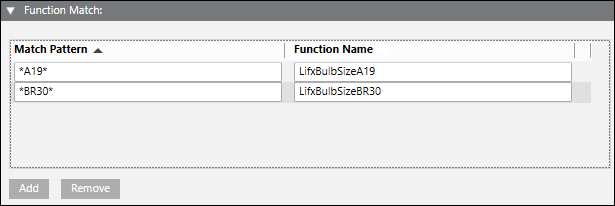

Export the Object Model
- In System Browser, select Management View.
- Select Project > System Settings > Libraries.
- Click the SORIS tab.
- In System Browser, select the Manual navigation check box.
- Select L1-Headquarter > Global > [Feature Name] > Object Model.
- Drag the desired object models to the SORIS Objects section.
- Do the following in the SORIS Objects section:

- Select the objects you want to control.
- In the Match String field, enter one or more comma-separated text strings for each object model you want to load dynamically in your adapter. The string name needs to correspond to the name of the device or devices using the object model.
- Do the following in the Properties section:

- Select the properties you want to control.
- In the Address field, enter one or more comma-separated text strings for each property you want associated with your adapter. The string name needs to correspond to the name of the device or devices.
- Do the following in the Function Match section:

- Click Add.
- Define a match pattern and function name to dynamically assign a function when an object is created in the SORIS adapter using the selected object model.
- In the Export Files Full Path field, click Browser, and then select an output directory.
- Click OK.
- Click Save
 .
.
- The system creates the following files: [name].cs, [name].java, [name].owl, [name].yaml.